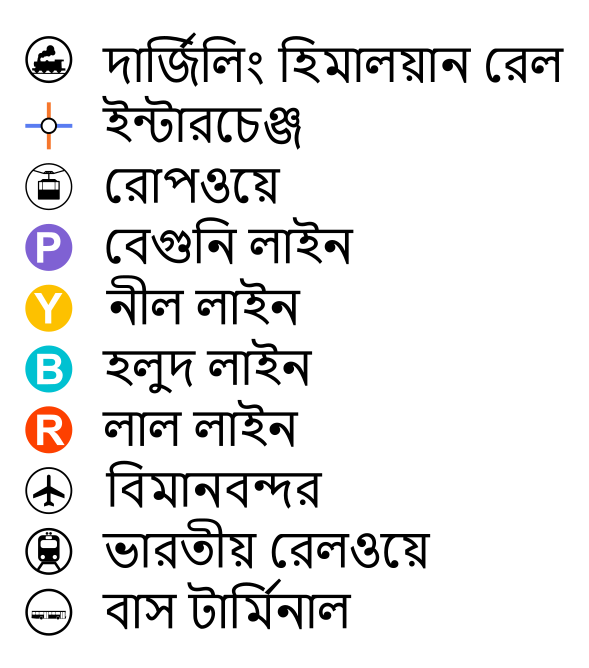
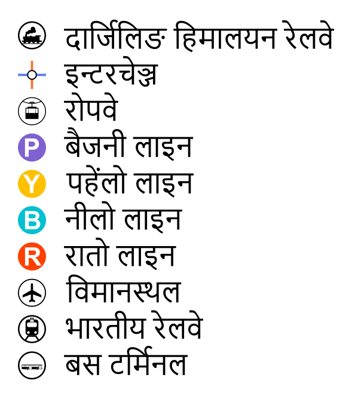
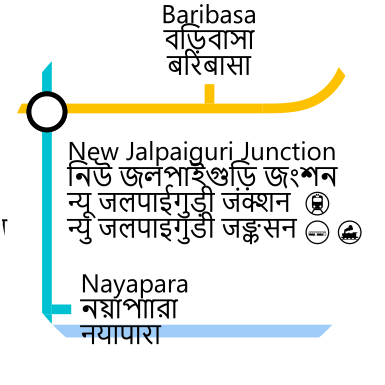
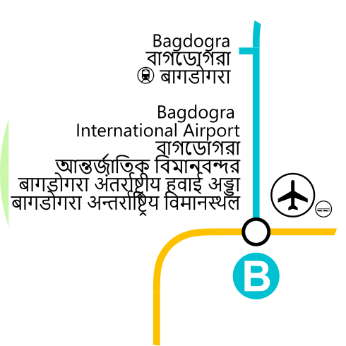
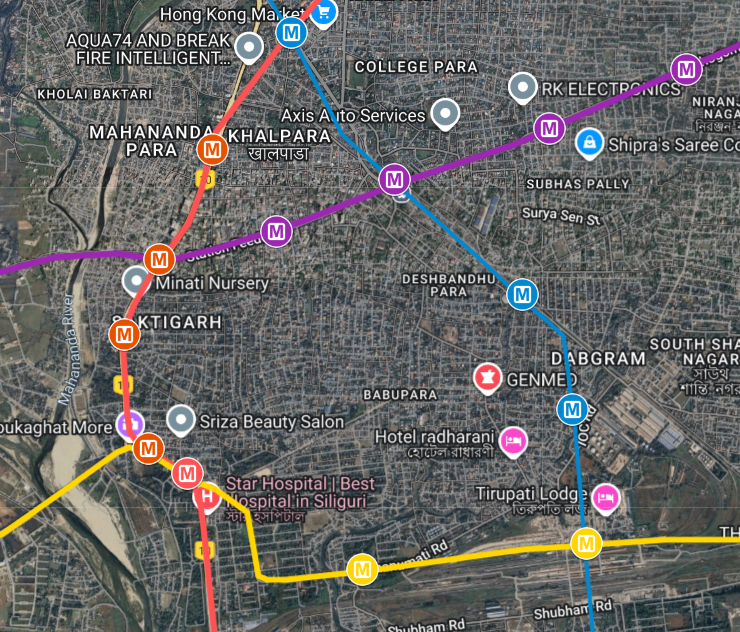
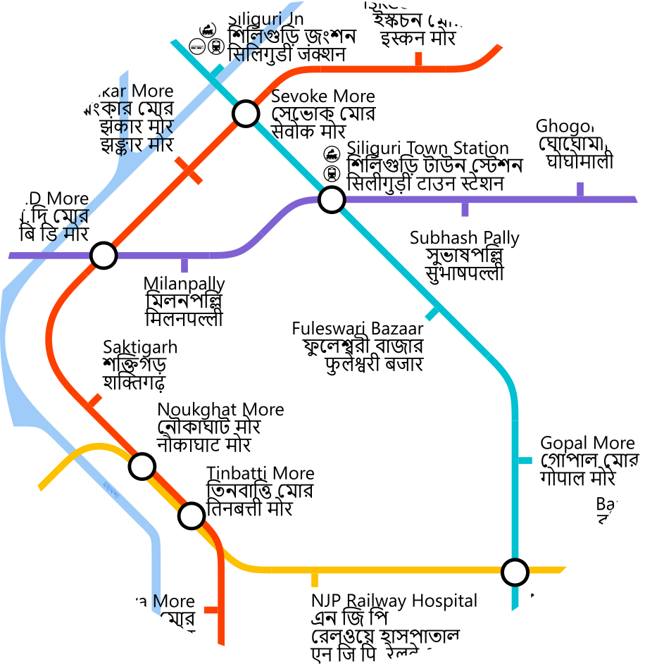

SPECULATIVE MAP OF SILIGURI METRO AND ROPEWAY
MAP BREAKDOWN
This is a speculative Map of a Metro System for the city of Siliguri.
It does not represents any real plans or proposals from any official authority.

-The Map features the possible interchanges with the Indian Railways.
-Major Inter-state Bus terminals is also featured.

-All the labels are in English, Bengali and Nepali.

New Jalpaiguri Junction remains the primary transportation hub with multiple Indian Railways routes converging and two speculated metro lines.

-Bagdogra Airport is another major transportation hub with two metro lines converging at the airport.
-Bagdogra station can provide interchange with the Indian Railways Siliguri Junction Aluabari Road Junction Line.
-Bagdogra station can provide interchange with the Indian Railways Siliguri Junction Aluabari Road Junction Line.


-The geographical routes was identified using Google Maps.
-The stations were equally placed alone the lines.